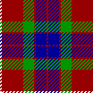

Sophia Fraser
Sophia Fraser 
| Birth | Marriage | Death |
| Ancestors | Brothers and Sisters | Descendants |
| Census | Homes and Schools | Occupation |
| SEARCH ENGINE | FAMILY TREES | FAMILY NAMES |

|
Name: |
Sophia Fraser |
|
When: |
December 20th at 4h 30m AM |
|
Where: |
95 Queen Street, Govan |
|
Sex: |
F |
|
Father: |
|
|
Profession: |
Plasterer (Journeyman) |
|
Mother: |
Sarah Fraser M.S. Brisbane |
|
Marriage: |
1881 March 4th, Harthill |
|
When: |
October 31st, 1919 |
|
Where: |
104 Riverford Road, Glasgow |
|
Groom: |
Andrew Rodger - Bachelor - Age 42. |
|
Profession: |
Powerloom Tender |
|
Address: |
12 Green Lodge Terrace, Glasgow |
|
Father: |
James Rodger, Gas Manager (deceased) |
|
Mother: |
Ann Rodger M.S. Mackie |
|
Bride: |
Sophia Fraser - Spinster - Age 35. |
|
Address: |
104 Riverford Road, Glasgow |
|
Father: |
Thomas Meiklehose Fraser, Plasterer |
|
Mother: |
Sarah Fraser M.S. Brisbane |
|
Signed: |
Jas E Houston, Minister of Shawlands |
|
Signed: |
Robert Aaron, Witness |
|
Signed: |
Tomasina Potts, Witness |
|
Name: |
Sophia Rodger |
|
When: |
April 6th at 0550 hrs |
|
Age: |
93 |
|
Sex: |
F |
|
Birth: |
20th December 1883. |
|
Marital Status: |
Widowed |
|
Spouse: |
Andrew Rodger, Fruiterer |
|
Where: |
Joint Hospital, Cardross Road, Glasgow (really Dumbarton) |
|
Father: |
Thomas Meiklehose Fraser Plasterer (deceased) |
|
Mother: |
Sarah Fraser M.S. Brisbane (deceased) |
|
Cause: |
Cerebral Thrombosis. Generalised atherosclerosis, Ischaemic Heart Disease. |
|
Doctor: |
J. Brown |
|
Reported by: |
James L. Rodger, Son, 1 Wisner Court, Thornliebank. |
Source: New register House.
Buried in Eastwood Cemetery, Glasgow.
Source: Sarah Rodger.
1891 Census - Eastwood, Renfrewshire - Film 0220181 Ed 6
Page 30.
11 Wilson Street, Eastwood, Pollokshaws, Renfrewshire.
| Thomas Fraser | Head | Mar | 30 | Plasterer | Lanarksh Hamilton |
| Sarah Do. | Wife | Do. | 30 | . | Ayrshire Stevenston |
| Sophia Do. | Daur | . | 7 | Scholar | Renfrewshire Govan |
| Thomas Do. | Son | . | 9 Mos. | . | Do. Neilston |
1901 Census - Eastwood, Renfrewshire - Entry 203, Page 39 of 54..
38 Maxwell St., Pollockshaws, Eastwood, East Renfrewshire.
| Thomas Fraser | Head | Mar | 41 | Plasterer | Worker | Lanarkshire Hamilton | 2 rooms |
| Sarah do. | Wife | Mar | 42 | Ayrshire Stevenston | |||
| Sophia do. | Daur | S. | 17 | Cotton Weaver | Worker | Lanarkshire Govan | |
| Thomas do. | Son | 11 | Scholar | Renfrewshire Barrhead | |||
| James do. | Son | 7 | do. | do. P'Shaws |
Always took her holidays in Largs and wanted to retire there.
Fraser Tartan 

Return to top of page.
Last Updated: February 1, 2003.
Number of visitors since February 1999 -
FastCounter
by LinkExchange

{kind=link}
{kind=link}